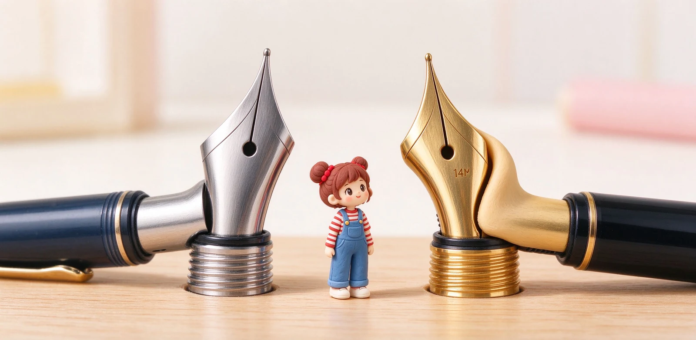

語意摘要：鋼筆筆尖主要分不鏽鋼尖與黃金尖（14K、18K、21K）。鋼尖便宜、堅硬耐操、線條穩定，適合日常與考試；金尖因為金質較軟，按壓會微微張開、線條跟著變化，回彈像踩床墊，適合長時間書寫與玩筆鋒。K 數越高越軟（21K 最軟彈），但也越需要細心保養；要不要升級，取決於你追求的是穩定還是那種軟彈手感。
先破除迷思：金尖不一定軟，鋼尖也不一定硬
很多人以為『金尖＝軟彈、鋼尖＝死板』，其實這是最常見的誤解。決定軟硬的，除了材質，還有筆尖的厚度、開縫長度與弧度設計。一支做薄的鋼尖可以很有彈性，一支做得厚實的 18K 金尖也能硬邦邦。
材質真正影響的是『性格』：金質較軟，受力後容易產生均勻的張開與回彈，寫起來帶點緩衝感；鋼材硬，受力幾乎不動，線條始終如一。所以與其問『金尖好不好』，不如問『我想要會跟著我用力變化的筆，還是一支永不變化的筆』。
鋼尖：便宜、耐操、線條穩定
不鏽鋼尖是入門鋼筆的主力，LAMY safari、百樂 Kakuno、多數平價日系筆都用鋼尖。它的好處是便宜（整支筆可能只要幾百元）、不怕摔、不怕酸性墨水腐蝕，而且線條粗細幾乎不會因為你用力而改變——這對考試、抄筆記反而是優點。
鋼尖的缺點是寫久了比較『直接』，沒有那種按下去微微下陷再彈回的層次感。但對九成日常書寫來說，這個缺點幾乎感受不到，這也是為什麼很多人鋼尖寫了好幾年才考慮升級。
金尖的 K 數：14K、18K、21K 差在哪
金尖不是純金，而是黃金加其他金屬的合金，用 K 數表示純度。常見的有 14K（約 58% 金）、18K（約 75% 金）、以及日系常見的 21K。規律大致是：K 數越高、金含量越多，質地越軟、越有彈性；但也越容易留下永久變形。
| 材質 | 質地 | 手感形容 | 常見於 |
|---|---|---|---|
| 不鏽鋼 | 硬、不變形 | 線條穩、直接 | 入門款如 Kakuno、safari |
| 14K 金 | 中間偏挺 | 有彈性但仍好控制 | Custom 74、寫樂 1911 S |
| 18K 金 | 較軟 | 按下有緩衝、會張開 | Pelikan M800、Custom 743 |
| 21K 金 | 最軟彈 | 明顯回彈、玩筆鋒 | 寫樂 1911 L、Pro Gear |
舉例來說，寫樂的 1911 S 用 14K 金尖、約 17 克，走的是好控制路線；同系列加大版 1911 L 改用 21K 金尖、約 21.6 克，就是給想要明顯軟彈的人。百樂 Custom 74 則是 14K 金尖，被很多人當作『第一支金尖』的安全牌。

為什麼早期要用金？抗腐蝕與那顆耐磨粒
早期墨水酸性強，金不容易被腐蝕，所以高級筆習慣用金尖，這個傳統延續到今天。不過筆尖真正接觸紙、會磨到的最前端，不是金也不是鋼，而是一顆焊上去的耐磨合金粒（常被通稱為銥粒），所以決定耐不耐磨的其實是這顆粒，不是基材貴不貴。
換句話說，你多花的錢買的是金的軟彈手感與質感，不是『比較不會磨壞』。以現代鋼尖的打磨技術，它們一樣可以寫很多年。
預算怎麼配？升級金尖值得嗎
如果你還在三百到一千元的入門階段，先把鋼尖寫好、搞清楚自己喜歡什麼粗細與風格，這比急著買金尖重要。當你開始覺得『我想要按下去有回彈、寫久手腕更鬆』，再往 14K 金尖中階款（台幣數千元）走，CP 值最高。
- 第一支：鋼尖入門款（如 Kakuno、safari），先確定愛上鋼筆。
- 第二支：14K 金尖中階款（如 Custom 74、白金 3776），體驗金的緩衝。
- 第三支：若迷戀軟彈，再考慮 18K／21K（如寫樂 1911 L）進階款。
常見問題 FAQ
金尖一定比鋼尖好寫嗎？
14K、18K、21K 哪個最適合第一次升級？
金尖比較不會磨壞嗎？
用酸性墨水是不是一定要金尖？
為什麼我用力寫，金尖反而越寫越粗？
資料來源與核實依據
- Fountain Pen Nib Materials Guide: Steel, Gold & Titanium（14ct／18ct 特性）（Pure Pens）
- Fountain Pen Nib and Tipping Materials Explained（14k 58.5%、18k 75% 軟硬差異）（Bottle and Plume）
- 1911 L Gold Trim Fountain Pen（21K Gold）（Sailor Pen 官方）
- How Nib Design Affects Pen Longevity（flexible gold nibs wear／deformation）（Fountain Pen Revolution）
相關文章推薦

EF／F／M／B 筆尖粗細怎麼選？鋼筆字幅與書寫習慣完整對照
筆尖粗細看的是最前端那顆小銥粒：日系 F 大約 0.4mm、歐系 F 約 0.6mm，寫中文抓日系 F，寫歐系筆想細字要往 EF 抓。
鋼筆刮紙、出水不順怎麼辦？筆尖檢查與微調實作
刮紙與斷墨九成不是筆爛，是筆尖那兩根細縫（tine）一高一低；用十倍放大鏡看正面、再用信用卡邊輕壓高的那根，很多問題當場解決。

百樂鋼筆怎麼選？Kakuno、Custom 74、Custom 823 經典系列盤點
百樂強在『一條龍』：從 NT$380 的 Kakuno 入門，到 14K 金尖的 Custom 74，再到真空上墨的 Custom 823，你可以從頭用到尾都不換牌子。